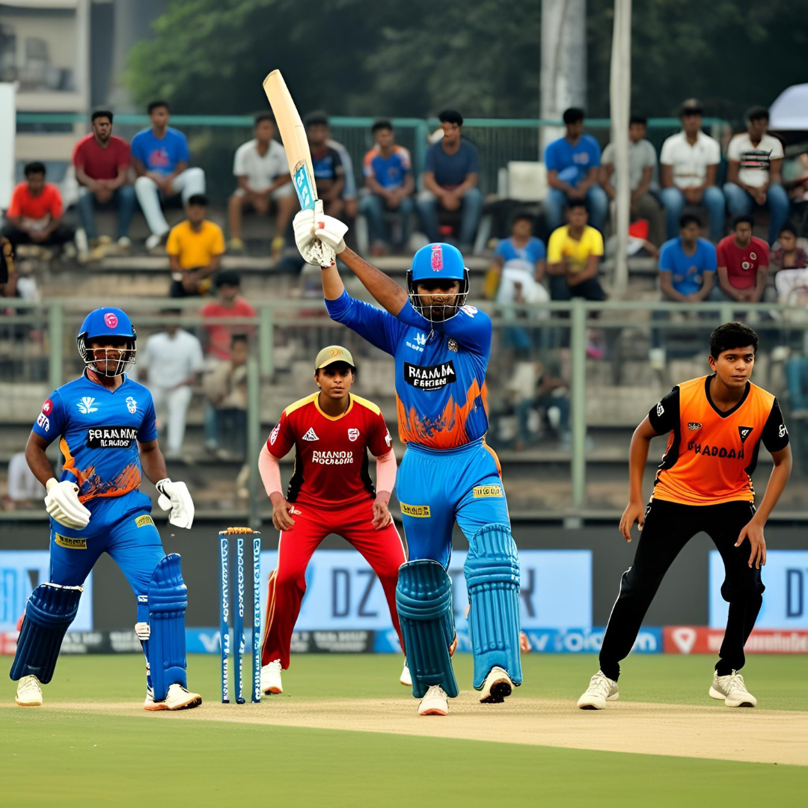
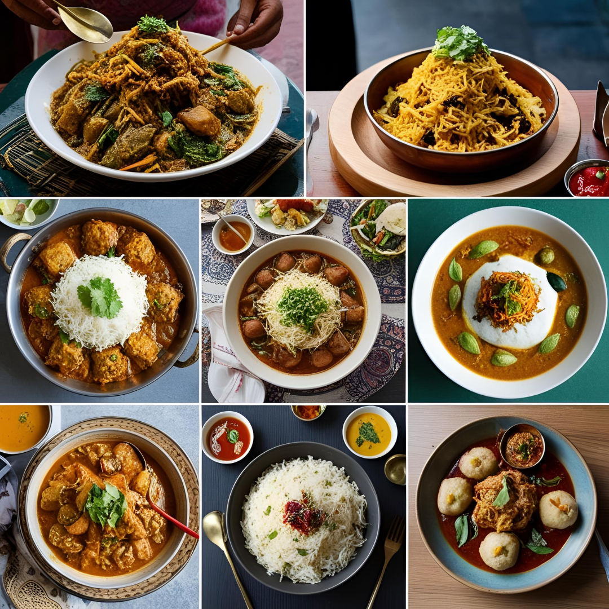
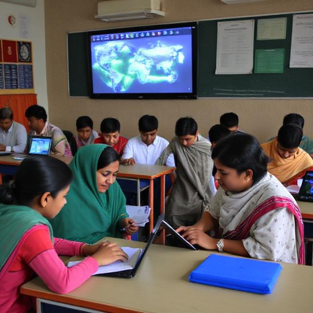
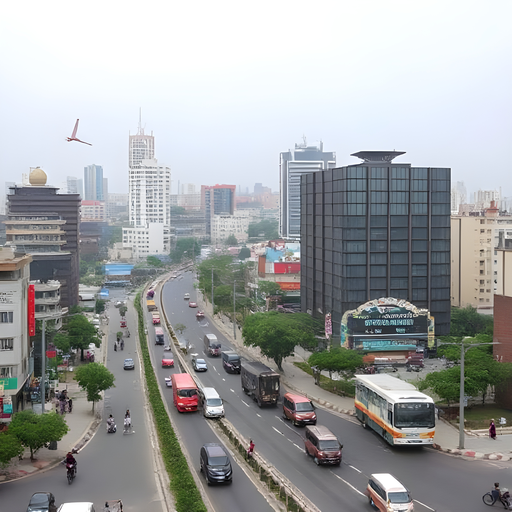
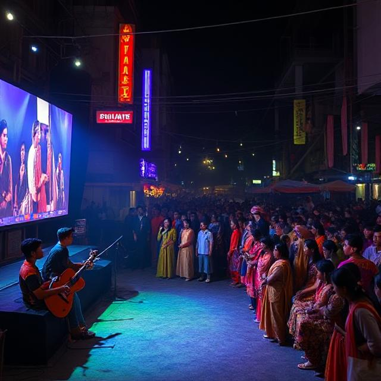
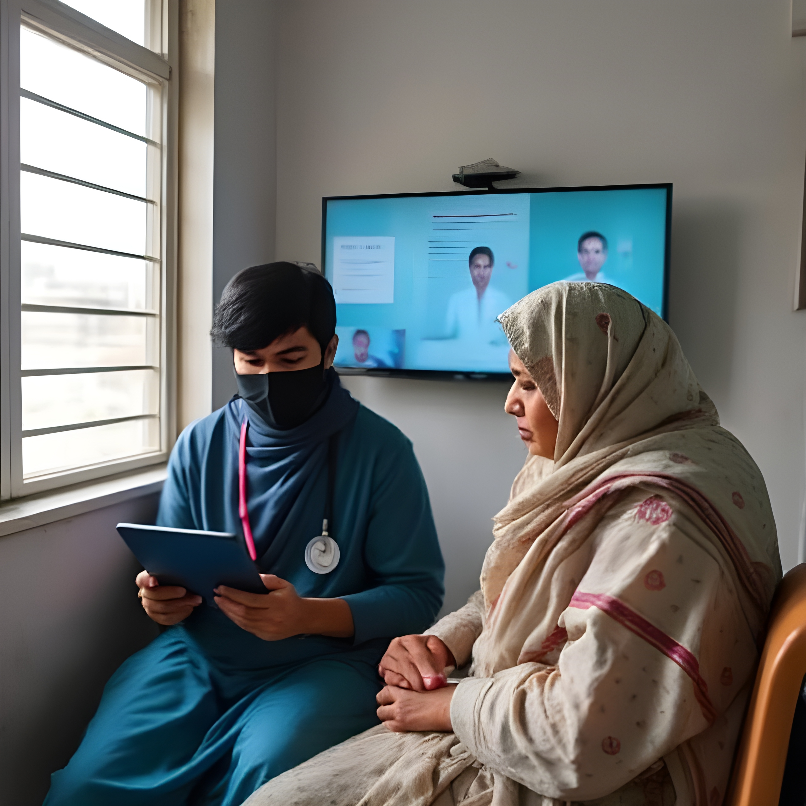
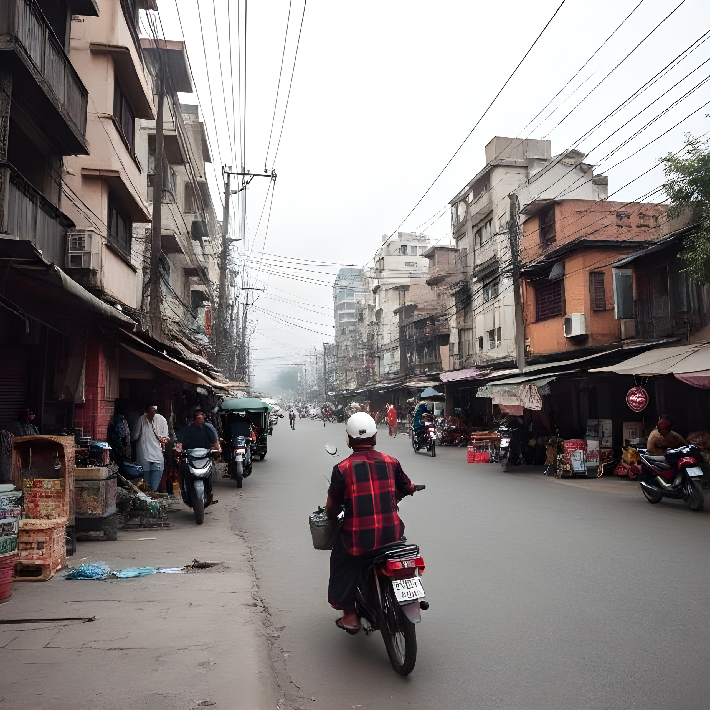

Business

Dhaka's garment sector continues to thrive, contributing significantly to the national GDP. Government policies are promoting digital banking and local entrepreneurship, aiming to make Dhaka a startup-friendly city.
Sports
Cricket fever is on the rise as Dhaka Premier League matches draw record crowds. Youth participation in football and kabaddi is also growing, with new training academies emerging across the city.
Food
Dhaka’s food scene is a rich tapestry of street flavors and upscale dining. From biryani to pitha, culinary festivals and night markets are celebrating the city’s heritage and fusion influences.
Weather
Heavy monsoon showers are expected this week. Meteorologists warn of urban flooding in low-lying areas. Citizens are urged to monitor weather updates and take necessary precautions.
Education
Educational reforms in Dhaka focus on digital classrooms and equitable access. Scholarships and exchange programs are expanding as universities build stronger international ties.
Current Affairs
City corporation elections and discussions on urban planning dominate headlines. Officials aim to balance infrastructure growth with environmental sustainability.
Entertainment
Dhallywood stars are lighting up the silver screen while Dhaka’s art galleries and music concerts attract youthful crowds. Cultural festivals are highlighting traditional Bangladeshi arts.
Health
Efforts are underway to improve maternal health services. Health tech startups are introducing telemedicine platforms to address Dhaka’s growing demand for accessible healthcare.
Technology
Dhaka’s IT sector is expanding rapidly, with focus on e-governance and app development. Tech parks and coding bootcamps are training a new generation of Bangladeshi innovators.
Lifestyle
City dwellers are embracing minimalist living and wellness trends. Yoga studios, cycling clubs, and eco-friendly fashion brands are gaining popularity among Dhaka’s urban youth.